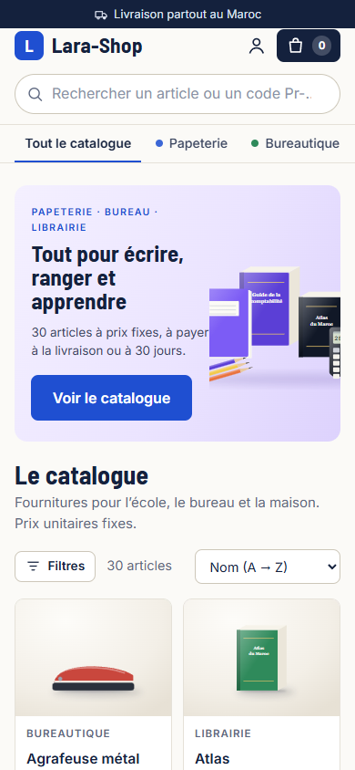

1 Le projet
Une vraie boutique, à partir du sujet
- Le sujet décrit 5 entités : Client, Commande, Fournisseur, Produit, Ligne Commande.
- La boutique vend 30 articles en 4 familles : Papeterie, Bureautique, Fourniture, Librairie.
- Paiement à la livraison ou à 30 jours, sans paiement en ligne.
- Toutes les données de démonstration sont créées par une seule commande :
php artisan migrate --seed.

/ : le bandeau puis le catalogue.7 Catalogue
La vitrine : GET /
- Seuls les produits disponibles : non archivés et visibles.
with('supplier'): une requête pour tous les fournisseurs.paginate(12): 12 cartes par page.
app/Models/Product.php
public function scopeAvailable(Builder $query): Builder
{
return $query->active()->where('is_listed', true);
}7 Fiche produit et design
Tout pour acheter au même endroit

/produits/Pr-000017 après un ajout.- Prix, stock, quantité −/+ et bouton dans un même encadré.
- Badges : En stock, Plus que 3 en stock, Rupture de stock.
- Couleurs : encre bleue, boutons cobalt, papier blanc.
- Titres condensés, cartes de même hauteur.
- Produit masqué ou archivé → 404.
8 Recherche
Les filtres vivent dans l’adresse

/?family=BU &max_price=100 &sort=price_desc
→ 6 articles de Bureautique à 100 DH ou moins, du plus cher au moins cher.
Formulaire en GET : l’adresse se partage et la pagination garde les filtres.
9 Sur téléphone
La même boutique sur un écran de 390 px


- Recherche en pleine largeur, familles qui défilent.
- Filtres : un panneau qui monte du bas, Échap pour fermer.
- Cartes sur 2 colonnes, tableaux en lignes empilées.
- Animations courtes, coupées si le système demande moins de mouvement.
10 Quantités et totaux
Les totaux sont calculés par le serveur

Cart::summary()relit chaque produit et son prix actuel.- Sous-total, remise du client connecté, total :
PriceCalculator::totals(). - Quantité > stock : ligne en rouge, bouton « Passer la commande » désactivé.
- Changer une quantité : PATCH · retirer : DELETE.
11 Prix figés
Le prix est copié dans la ligne au moment de la commande
app/Services/OrderService.php
$lines[] = [
'product_id' => $product->id,
'quantity' => $quantity,
'unit_price' => $product->unit_price, // price frozen now
];- La commande garde aussi
discount_rate,subtotal,discount_amount,total. - La condition de paiement (
payment_terms) est enregistrée avec elle.

13 Mes commandes
L’historique du client

Compte client@larashop.test :
- Com-000001 · Livrée
- Com-000002 · Expédiée
- Com-000003 · En attente
Détail, suivi, PDF et impression pour chaque commande.
La liste ne lit que client_id du compte connecté.
15 Démo
Créer un produit, de bout en bout
1. Produits et stock → + Nouveau produit.
2. Désignation « Taille-crayon double », prix 4,50, famille FO, fournisseur Fournitures du Sud, stock 20.
3. Choisir une image : l’aperçu s’affiche avant l’envoi.
4. Enregistrer → « Produit Pr-000031 créé. »
5. Décocher « Visible dans la boutique » → il disparaît du catalogue.

18 Démo · l’erreur
Acheter… et oublier le paiement
1. Connexion client@larashop.test.
2. Rechercher « cahier » → Pr-000002, quantité 4 → Ajouter.
3. Rechercher « Pr-000012 » (calculatrice) → Ajouter.
4. Panier : 50,00 + 89,00 = 139,00, remise 13,90, total 125,10 DH.
5. Passer la commande → Confirmer sans choisir de condition.
Attendu : « Choisissez une condition de paiement. » sous les choix.

18 Démo · correction
Corriger, confirmer, faire avancer
6. Choisir À 30 jours → Confirmer.
7. Attendu : Com-000018, « En attente », total 125,10 DH.
8. Stock : cahier 200 → 196, calculatrice 18 → 17.
9. Admin : Commandes → Com-000018 → En préparation.
10. Client : Mes commandes → « En préparation », Télécharger le PDF.